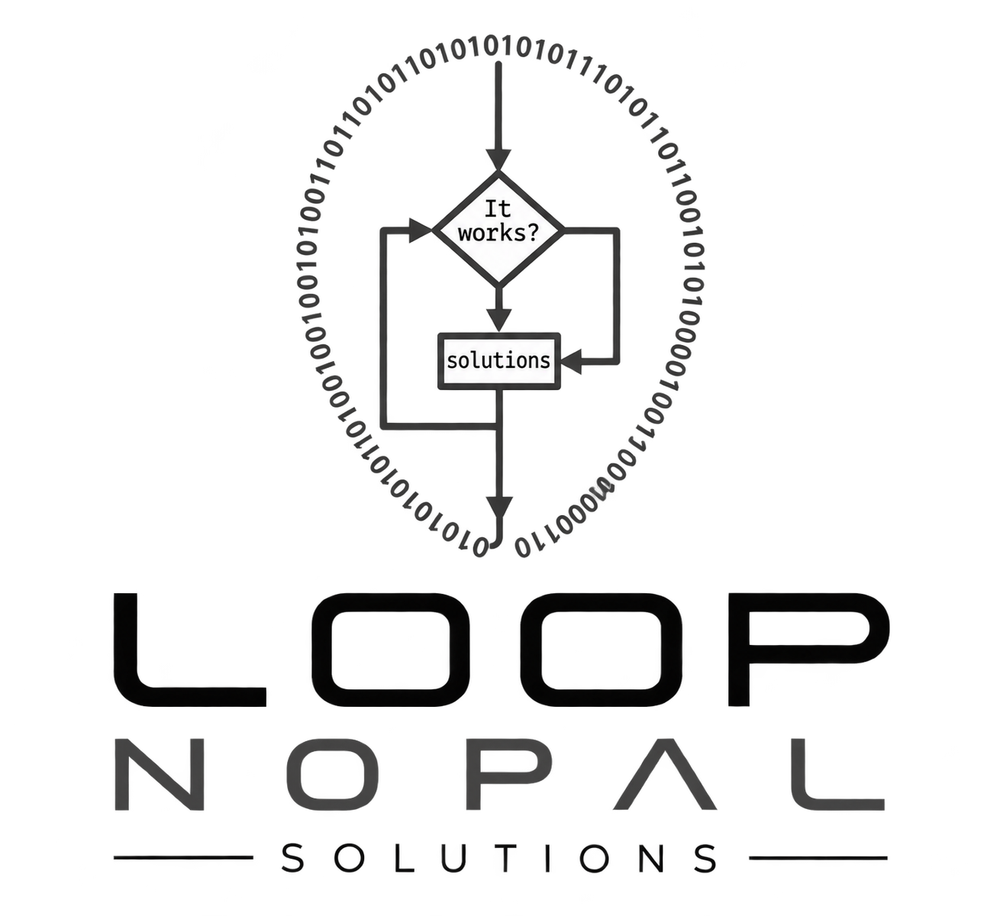

Modelo visual de control semafórico coordinado.

Movilidad inteligente / Querétaro
Loop Nopal Solutions
Convertimos ciclos, demanda y congestión en escenarios visuales que ayudan a comprender el comportamiento de un cruce urbano.
Explorar simulacionesFoto: Cristian González photographer · @pactogonzalez
Prototipo demostrativo Av. Sombrerete / Calle 6
La empresa
Tecnología práctica para una movilidad urbana más eficiente.
Loop Nopal Solutions desarrolla software, análisis y herramientas para la gestión inteligente del tráfico.
Nuestra misión es ayudar a reducir la congestión, mejorar la seguridad y hacer más eficiente el transporte mediante soluciones medibles y basadas en datos.
Nuestra historia
El proyecto nace para atender uno de los retos más comunes de las ciudades en crecimiento: la gestión ineficiente del tráfico. La primera iniciativa estudia un control semafórico adaptativo capaz de evolucionar desde una demostración visual hasta un sistema validado con aforos reales.
Comparación de planes actuales y optimizados.
Análisis demostrativo de horas valle y periodos pico.
Base documentada para una futura validación en campo.
Laboratorio abierto
Simulaciones ejecutables
Cada experiencia se abre de manera independiente, directamente desde este sitio.
01Versión 4
Plan actual vs. plan optimizado
Compara el plan actual con una propuesta optimizada mediante ciclos, métricas y niveles de congestión.
Abrir simulación02Versión 1
Ciclo semafórico
Vista del ciclo de 100 segundos y sus seis fases coordinadas.
Abrir simulación03Versión 2
Congestión durante el día
Simulación acelerada con periodos pico, colas vehiculares y reloj de operación diario.
Abrir simulaciónDe la fase al sistema
Una base clara para estudiar la movilidad urbana.
Simulación semafórica
Representamos fases, tiempos y movimientos antes de intervenir un cruce.
Lectura de congestión
Comparamos visualmente horas valle, periodos pico y puntos de saturación.
Evolución con datos
La documentación conserva una ruta para integrar aforos y sensores en etapas posteriores.
Equipo
Colaboración técnica con enfoque práctico.
Trabajamos con comunicación transparente y una meta común: construir tecnología con impacto medible para las comunidades.
Oscar B. Lara López
Fundador y desarrolladorAnálisis, dirección técnica y sistemas de movilidad.
Ricardo Andrade Prado
Logística y finanzasIngeniería industrial y coordinación operativa.
Edgar Renan López Silva
Desarrollo y despliegueSoporte técnico en campo y oficina.
Proyecto en desarrollo
Cruce Sombrerete, Calle 6 y Práxedis Guerrero.
El prototipo representa un ciclo de seis fases y escenarios de congestión. Las tasas y métricas son ilustrativas y no sustituyen aforos viales reales.
Preguntas frecuentes
Información esencial del proyecto.
¿Dónde se desarrolla el caso inicial?
El caso de estudio se concentra en el cruce de avenida Sombrerete, Calle 6 y Práxedis Guerrero, en Querétaro.
¿Qué compara la simulación principal?
Contrasta visualmente un plan semafórico actual con una propuesta optimizada bajo el mismo escenario de demanda.
¿Los resultados sustituyen un aforo vial?
No. Son valores demostrativos. Una implementación en campo necesita aforos, validación técnica y coordinación con las autoridades.
Contacto general
Hablemos de movilidad urbana.
Para información sobre el proyecto, colaboraciones o demostraciones, utiliza los canales oficiales de Loop Nopal Solutions.